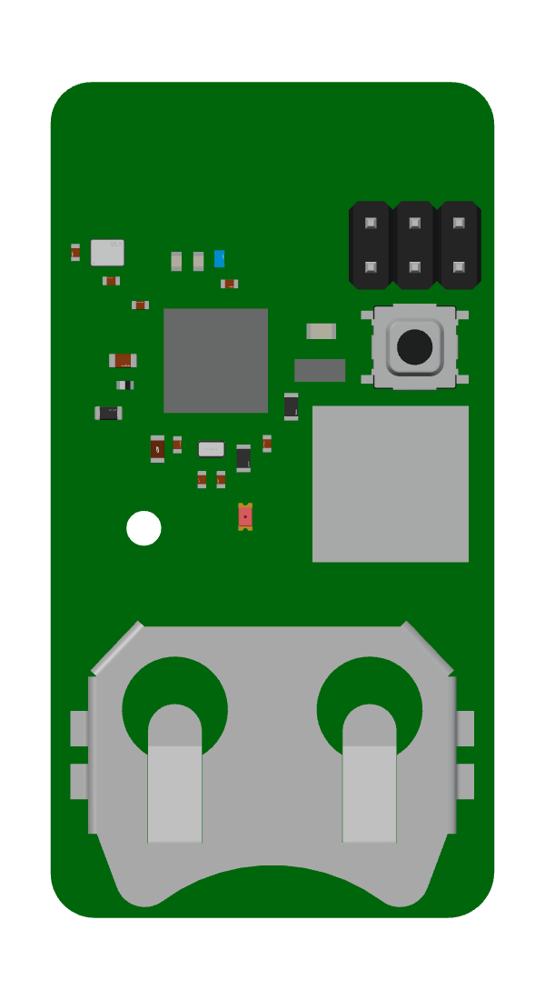

PCB design / Embedded systems / December 2025
Dual-Mode BLE Beacon
A compact, battery-powered Bluetooth Low Energy board with Finder and Game modes. Designed in Altium Designer around the Nordic nRF52832, with an integrated 2.4 GHz antenna and embedded C firmware.
- Microcontroller
- Nordic nRF52832
- Board
- 4 layers · 1.7 × 1.0 in
- Power
- CR2032 coin cell
- Design tools
- Altium Designer · Nordic SDK
01 / Interactive board
Explore the board in 3D
Click and drag to rotate the board. Zoom in to inspect components, or switch to a top or bottom view.

Loading interactive board…
Keyboard: focus the board, then use arrow keys to rotate, +/− to zoom, and R to reset.
02 / Board overview
The populated board design
The Altium top view shows component placement, the antenna, and the battery holder. Select an image to inspect it at a larger size.
Hardware and firmware
The four-layer PCB combines a 2.4 GHz meandered inverted-F antenna (MIFA) with a coin-cell-powered nRF52832 design. RF layout work includes antenna keepout, no-copper regions, and via fencing.
Embedded C firmware using the Nordic SDK implements Finder and Game modes and a BLE advertising state machine. Programming and debugging used SWD/JTAG with a Raspberry Pi Pico as a probe.
From design to assembly
The images below document the layout, manufactured bare PCB, and populated hardware. Explore the interactive 3D model above and the circuit schematic below.
03 / PCB layout
Routing and copper pours
Two Altium layout views show the board with polygon pours hidden and visible.
04 / Manufactured hardware
Fabrication and assembly
The bare board beside two U.S. quarters provides a size reference; the second photo shows the populated board.
05 / Schematic
Explore the circuit
Zoom in to read component values and connections. Drag to pan, or use the viewer’s scrollbars and keyboard arrow keys.

06 / Schematic file
Schematic PDF
Download the original circuit schematic for closer inspection.